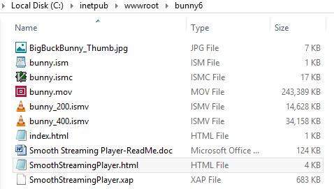
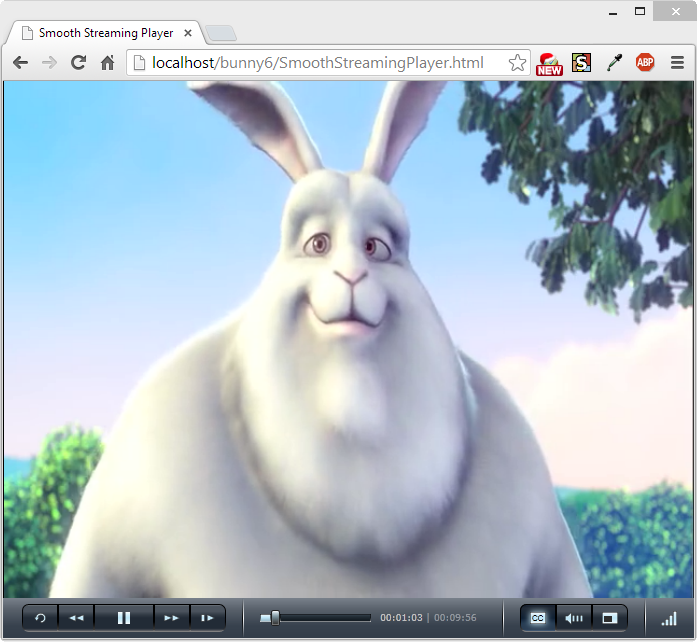

ffmpeg Smooth Streaming - 2017
In this section, we'll try to create the necessary files for MS Smooth Streaming using ffmpeg.
According to MOV/MP4/ISMV (Smooth Streaming) muxer, we can use following options.
The mov/mp4/ismv muxer supports fragmentation.
Normally, a MOV/MP4 file has all the metadata about all packets stored in one location (written at the end of the file, it can be moved to the start for better playback by adding faststart to the movflags, or using the qt-faststart tool).
A fragmented file consists of a number of fragments, where packets and metadata about these packets are stored together.
Writing a fragmented file has the advantage that the file is decodable even if the writing is interrupted (while a normal MOV/MP4 is undecodable if it is not properly finished), and it requires less memory when writing very long files (since writing normal MOV/MP4 files stores info about every single packet in memory until the file is closed). The downside is that it is less compatible with other applications.
Fragmentation is enabled by setting one of the AVOptions that define how to cut the file into fragments:
- -moov_size bytes
Reserves space for the moov atom at the beginning of the file instead of placing the moov atom at the end. If the space reserved is insufficient, muxing will fail. - -movflags frag_keyframe
Start a new fragment at each video keyframe. - -frag_duration duration
Create fragments that are duration microseconds long. - -frag_size size
Create fragments that contain up to size bytes of payload data. - -movflags frag_custom
Allow the caller to manually choose when to cut fragments, by calling av_write_frame(ctx, NULL) to write a fragment with the packets written so far. (This is only useful with other applications integrating libavformat, not from ffmpeg.) - -min_frag_duration duration
Don't create fragments that are shorter than duration microseconds long.
Picture from IIS_Smooth_Streaming_Technical_Overview.pdf
If more than one condition is specified, fragments are cut when one of the specified conditions is fulfilled. The exception to this is -min_frag_duration, which has to be fulfilled for any of the other conditions to apply.
Additionally, the way the output file is written can be adjusted through a few other options:
- -movflags empty_moov
Write an initial moov atom directly at the start of the file, without describing any samples in it. Generally, an mdat/moov pair is written at the start of the file, as a normal MOV/MP4 file, containing only a short portion of the file. With this option set, there is no initial mdat atom, and the moov atom only describes the tracks but has a zero duration.
Files written with this option set do not work in QuickTime. This option is implicitly set when writing ismv (Smooth Streaming) files.
- -movflags separate_moof
Write a separate moof (movie fragment) atom for each track. Normally, packets for all tracks are written in a moof atom (which is slightly more efficient), but with this option set, the muxer writes one moof/mdat pair for each track, making it easier to separate tracks.
This option is implicitly set when writing ismv (Smooth Streaming) files.
- -movflags faststart
Run a second pass moving the index (moov atom) to the beginning of the file. This operation can take a while, and will not work in various situations such as fragmented output, thus it is not enabled by default. - -movflags rtphint
Add RTP hinting tracks to the output file.
Smooth Streaming content can be pushed in real time to a publishing point on IIS with this muxer. Example:
ffmpeg -re <normal input/transcoding options> -movflags isml+frag_keyframe -f ismv http://server/publishingpoint.isml/Streams(Encoder1)
Here is the list of ffmpeg AVOptions from ffmpeg -h full
mp4 muxer AVOptions: -movflagsE..... MOV muxer flags (default 0) rtphint E..... Add RTP hint tracks empty_moov E..... Make the initial moov atom empty (not supported by QuickTime) frag_keyframe E..... Fragment at video keyframes separate_moof E..... Write separate moof/mdat atoms for each track frag_custom E..... Flush fragments on caller requests isml E..... Create a live smooth streaming feed (for pushing to a publishing point) faststart E..... Run a second pass to put the index (moov atom) at the beginning of the file omit_tfhd_offset E..... Omit the base data offset in tfhd atoms -moov_size E..... maximum moov size so it can be placed at the begin (from 0 to INT_MAX) (default 0) -rtpflags E..... RTP muxer flags (default 0) latm E..... Use MP4A-LATM packetization instead of MPEG4-GENERIC for AAC rfc2190 E..... Use RFC 2190 packetization instead of RFC 4629 for H.263 skip_rtcp E..... Don't send RTCP sender reports h264_mode0 E..... Use mode 0 for H264 in RTP send_bye E..... Send RTCP BYE packets when finishing -skip_iods E..... Skip writing iods atom. (from 0 to 1) (default 1) -iods_audio_profile E..... iods audio profile atom. (from -1 to 255) (default -1) -iods_video_profile E..... iods video profile atom. (from -1 to 255) (default -1) -frag_duration E..... Maximum fragment duration (from 0 to INT_MAX) (default 0) -min_frag_duration E..... Minimum fragment duration (from 0 to INT_MAX) (default 0) -frag_size E..... Maximum fragment size (from 0 to INT_MAX) (default 0) -ism_lookahead E..... Number of lookahead entries for ISM files (from 0 to INT_MAX) (default 0) -use_editlist E..... use edit list (from -1 to 1) (default -1) -video_track_timescale E..... set timescale of all video tracks (from 0 to INT_MAX) (default 0)
For more info on the muxer command:
https://github.com/FFmpeg/FFmpeg/blob/master/doc/muxers.texi
A publishing point is a physical path on the server hosting the content. When a client requests for contents, IIS media services uses the publishing point to translate the client's request. After a client successfully connects to the publishing point, IIS server manages the connection and streams the content.
A publishing point can be configured to perform the following roles:
- Client delivery
Delivers the live streams from a live source to Smooth Streaming-compatible clients. We can configure the publishing point to source from an encoder or from a Live Smooth Streaming publishing point on another server in a distributed network. - Server distribution
Distributes the live streams to Live Smooth Streaming publishing points on other servers (a push configuration) or gets the live streams from a Live Smooth Streaming publishing point on another server (a pull configuration). We can configure Live Smooth Streaming publishing points on multiple servers to source from this publishing point, either by configuring this publishing point to "push' live streams to the servers or by configuring Live Smooth Streaming publishing points on the servers to "pull" live streams from this publishing point. This will balance the load across the servers in our Live Smooth Streaming network. - Archiving
Archives the live streams from a live source (an encoder or Live Smooth Streaming Archives the live streams from a live source (an encoder or Live Smooth Streaming publishing point on another server) to a Smooth Streaming presentation format for later on-demand viewing by Smooth Streaming-compatible clients.
By default, the publishing point is configured to perform all of these roles.
For more on publishing point, please check
http://www.unified-streaming.com/support/documentation/content-delivery/publishing-points/.
In this section, we'll encode our source video (bunny.mov) to a fragmented MP4 file. For the audio stream we select the AAC codec at a bitrate of 64 kbits/second. For the video stream we select the H.264 codec at a bitrate of 400 kbits/seconds and at a resolution of 848 pixels by 400.
| Stream id | Type | Bitrate(kbits/sec) | Resolution (W x H) |
|---|---|---|---|
| 1 | audio | 64 | |
| 2 | video | 400 | 640 x 480 |
$ ffmpeg -y -i bunny.mov \ -c:a libfaac -ac 2 -b:a 64k \ -c:v libx264 -preset fast -profile:v baseline -g 100 -keyint_min 100 \ -x264opts pic-struct:no-scenecut -movflags frag_keyframe \ -map 0:v -b:v:0 400k -s:v:0 640x480 -map 0:a:0 \ bunny.ismv $ ls bunny.ismv bunny.mov
In this section, we select the H.264 codec at a bitrate of 200 and 400 kbits/seconds for the video stream.
| Stream id | Type | Bitrate(kbits/sec) | Resolution (W x H) |
|---|---|---|---|
| 1 | audio | 64 | 2 | video | 200 | 320 x 240 |
| 3 | video | 400 | 640 x 480 |
$ ffmpeg -y -i bunny.mov \ -an -vcodec libx264 -g 100 -keyint_min 100 \ -x264opts pic-struct:no-scenecut -movflags frag_keyframe \ -b 200k -s 320x240 \ bunny_200k.ismv $ ffmpeg -y -i bunny.mov \ -acodec libfaac -ac 2 -ab 64k \ -vcodec libx264 -g 100 -keyint_min 100 \ -x264opts pic-struct:no-scenecut -movflags frag_keyframe \ -b 400k -s 640x480 \ bunny_400k.ismv $ ls bunny_200k.ismv bunny_400k.ismv bunny.mov
In this section, we select the H.264 codec at a bitrate of 200 and 400 kbits/seconds for the video stream.
| Stream id | Type | Bitrate(kbits/sec) | Resolution (W x H) |
|---|---|---|---|
| 1 | audio | 48 | 2 | video | 400 | 400 x 288 |
| 3 | video | 894 | 489 x 272 |
| 4 | video | 2000 | 848 x 480 |
Audio demux and encoding:
ffmpeg -analyzeduration 2147480000 -i bunny.mov -ar 48000 -ac 2 -y audio.wav neroAacEnc -cbr 128000 -lc -if audio.wav -of audio.mp4
Video demux and encoding:
ffmpeg -i bunny.mov -r 25 -s 854x480 -aspect 16:9 -f yuv4mpegpipe -pix_fmt yuv420p -vsync 1 -g 100 -keyint_min 100 -movflags frag_keyframe -y video.y4m x264 --pass 1 --fps 25 --bitrate 2000 --no-scenecut --stats ./x264_2pass.log -o /dev/null video.y4m x264 --pass 2 --fps 25 --bitrate 2000 --no-scenecut --stats ./x264_2pass.log -o video.h264 video.y4m ffmpeg -i video.h264 -i audio.mp4 -vcodec copy -acodec copy -y bunny_2000.ismv ffmpeg -i bunny.mov -r 25 -s 480x272 -aspect 16:9 -f yuv4mpegpipe -pix_fmt yuv420p -vsync 1 -g 100 -keyint_min 100 -movflags frag_keyframe -y video.y4m x264 --pass 1 --fps 25 --bitrate 894 --no-scenecut --stats ./x264_2pass.log -o /dev/null video.y4m x264 --pass 2 --fps 25 --bitrate 894 --no-scenecut --stats ./x264_2pass.log -o video.h264 video.y4m ffmpeg -i video.h264 -vcodec copy -y bunny_894.ismv ffmpeg -i bunny.mov -r 25 -s 288x160 -aspect 16:9 -f yuv4mpegpipe -pix_fmt yuv420p -vsync 1 -g 100 -keyint_min 100 -movflags frag_keyframe -y video.y4m x264 --pass 1 --fps 25 --bitrate 400 --no-scenecut --stats ./x264_2pass.log -o /dev/null video.y4m x264 --pass 2 --fps 25 --bitrate 400 --no-scenecut --stats ./x264_2pass.log -o video.h264 video.y4m ffmpeg -i video.h264 -vcodec copy -y bunny_400.ismv
manifest:
ismindex -n bunny bunny_400.ismv bunny_894.ismv bunny_2000.ismv
Files:
We can use mp4split to split an mp4 file into multiple different segments. Along with splitting the movie up, it can also be used to extract segments of video from a movie file. mp4split uses ffmpeg -vcodec copy option to split our movies as quickly as we can copy them with 0 loss to quality.
mp4split -o bunny.ism bunny.ismv
However, it's not an open source tool. So, we may want to stick to ffmpeg tool as described in the following section.
ffmpeg/tools/ismindex.c can be used to get manifest file.
We need to compile it:
$ git clone --depth 1 git://source.ffmpeg.org/ffmpeg $ cd ffmpeg $ ./configure --enable-gpl $ make $ make tools/ismindex
We'll use the simple case as in the previous section. Just create a simple file for smooth streaming with one bit rate, we did:
$ ffmpeg <normal input/transcoding options> -movflags frag_keyframe foo.ismv
Actual command was:
$ ffmpeg -y -i bunny.mov \ -acodec libfaac -ac 2 -ab 64k \ -vcodec libx264 -g 100 -keyint_min 100 \ -x264opts pic-struct:no-scenecut -movflags frag_keyframe \ -b 400k -s 640x480 \ bunny_400.ismv $ ls bunny.ismv bunny.mov
Now, we want to create manifest files: ism and ismc.
The syntax is:
$ ismindex -n foo foo.ismv
Actual command for our case is:
$ ismindex -n bunny bunny.ismv $ ls bunny.ism bunny.ismc bunny.ismv bunny.mov
Here are the files:
bunny.ism, bunny.ismc, bunny.ismv, bunny.movMaking ism and ismc from serveral ismvs can be done the same way:
$ ls BigBuckBunny_1427.ismv BigBuckBunny_230.ismv BigBuckBunny_477.ismv BigBuckBunny_991.ismv BigBuckBunny_2056.ismv BigBuckBunny_2962.ismv BigBuckBunny_331.ismv BigBuckBunny_688.ismv $ ismindex -n BigBuckBunny BigBuckBunny_230.ismv \ BigBuckBunny_331.ismv BigBuckBunny_477.ismv BigBuckBunny_688.ismv BigBuckBunny_991.ismv \ BigBuckBunny_1427.ismv BigBuckBunny_2056.ismv BigBuckBunny_2962.ismv $ls BigBuckBunny_1427.ismv BigBuckBunny_230.ismv BigBuckBunny_477.ismv BigBuckBunny_991.ismv BigBuckBunny.ismc BigBuckBunny_2056.ismv BigBuckBunny_2962.ismv BigBuckBunny_331.ismv BigBuckBunny_688.ismv BigBuckBunny.ism
To pre-split files for serving as static files by a web server without any extra server support, create the ismv file as normal, and we split it using the following command:
$ ismindex -split bunny.ismv
This step creates a file Manifest and directories QualityLevel(...), that can be read directly by a smooth streaming player.
$ ls -l total 277524 -rw-r--r-- 1 461 bunny.ism -rw-r--r-- 1 8891 bunny.ismc -rw-r--r-- 1 34895424 bunny.ismv -rw-r--r-- 1 249229883 bunny.mov -rw-r--r-- 1 8891 Manifest drwxr-xr-x 2 12288 QualityLevels(398718) drwxr-xr-x 2 12288 QualityLevels(64176) $ cd "QualityLevels(398718)" $ ls Fragments(video=0) Fragments(video=1875213333) Fragments(video=2791880000) Fragments(video=3708546667) Fragments(video=4583546667) Fragments(video=5458546667) Fragments(video=1000213333) Fragments(video=1916880000) Fragments(video=2833546667) Fragments(video=3750213333) Fragments(video=458546667) Fragments(video=5500213333) Fragments(video=1041880000) Fragments(video=1958546667) Fragments(video=2875213333) Fragments(video=375213333) Fragments(video=4625213333) Fragments(video=5541880000) Fragments(video=1083546667) Fragments(video=2000213333) Fragments(video=2916880000) Fragments(video=3791880000) Fragments(video=4666880000) Fragments(video=5583546667) Fragments(video=1125213333) Fragments(video=2041880000) Fragments(video=291880000) Fragments(video=3833546667) Fragments(video=4708546667) Fragments(video=5625213333) Fragments(video=1166880000) Fragments(video=2083546667) Fragments(video=2958546667) Fragments(video=3875213333) Fragments(video=4750213333) Fragments(video=5666880000) Fragments(video=1208546667) Fragments(video=208546667) Fragments(video=3000213333) Fragments(video=3916880000) Fragments(video=4791880000) Fragments(video=5708546667) Fragments(video=1250213333) Fragments(video=2125213333) Fragments(video=3041880000) Fragments(video=3958546667) Fragments(video=4833546667) Fragments(video=5750213333) Fragments(video=125213333) Fragments(video=2166880000) Fragments(video=3083546667) Fragments(video=4000213333) Fragments(video=4875213333) Fragments(video=5791880000) Fragments(video=1291880000) Fragments(video=2208546667) Fragments(video=3125213333) Fragments(video=4041880000) Fragments(video=4916880000) Fragments(video=5833546667) Fragments(video=1333546667) Fragments(video=2250213333) Fragments(video=3166880000) Fragments(video=4083546667) Fragments(video=4958546667) Fragments(video=583546667) Fragments(video=1375213333) Fragments(video=2291880000) Fragments(video=3208546667) Fragments(video=4125213333) Fragments(video=5000213333) Fragments(video=5875213333) Fragments(video=1416880000) Fragments(video=2333546667) Fragments(video=3250213333) Fragments(video=4166880000) Fragments(video=500213333) Fragments(video=5916880000) Fragments(video=1458546667) Fragments(video=2375213333) Fragments(video=3291880000) Fragments(video=416880000) Fragments(video=5041880000) Fragments(video=5958546667) Fragments(video=1500213333) Fragments(video=2416880000) Fragments(video=3333546667) Fragments(video=41880000) Fragments(video=5083546667) Fragments(video=625213333) Fragments(video=1541880000) Fragments(video=2458546667) Fragments(video=333546667) Fragments(video=4208546667) Fragments(video=5125213333) Fragments(video=666880000) Fragments(video=1583546667) Fragments(video=2500213333) Fragments(video=3375213333) Fragments(video=4250213333) Fragments(video=5166880000) Fragments(video=708546667) Fragments(video=1625213333) Fragments(video=250213333) Fragments(video=3416880000) Fragments(video=4291880000) Fragments(video=5208546667) Fragments(video=750213333) Fragments(video=1666880000) Fragments(video=2541880000) Fragments(video=3458546667) Fragments(video=4333546667) Fragments(video=5250213333) Fragments(video=791880000) Fragments(video=166880000) Fragments(video=2583546667) Fragments(video=3500213333) Fragments(video=4375213333) Fragments(video=5291880000) Fragments(video=833546667) Fragments(video=1708546667) Fragments(video=2625213333) Fragments(video=3541880000) Fragments(video=4416880000) Fragments(video=5333546667) Fragments(video=83546667) Fragments(video=1750213333) Fragments(video=2666880000) Fragments(video=3583546667) Fragments(video=4458546667) Fragments(video=5375213333) Fragments(video=875213333) Fragments(video=1791880000) Fragments(video=2708546667) Fragments(video=3625213333) Fragments(video=4500213333) Fragments(video=5416880000) Fragments(video=916880000) Fragments(video=1833546667) Fragments(video=2750213333) Fragments(video=3666880000) Fragments(video=4541880000) Fragments(video=541880000) Fragments(video=958546667)
The Manifest file looks like this:
<?xml version="1.0" encoding="utf-8"?>
<SmoothStreamingMedia MajorVersion="2" MinorVersion="0" Duration="5965013340">
<StreamIndex Type="video" QualityLevels="1" Chunks="144" Url="QualityLevels({bitrate})/Fragments(video={start time})">
<QualityLevel Index="0" Bitrate="398718" FourCC="H264" MaxWidth="640" MaxHeight="480" CodecPrivateData="000000016742C01EDB0280F684000003000400000300C07C58BB800000000168CA8CB2" />
<c n="0" d="41880000" />
<c n="1" d="41666667" />
<c n="2" d="41666666" />
...
<c n="140" d="41666666" />
<c n="141" d="41666667" />
<c n="142" d="41666667" />
<c n="143" d="6250000" />
</StreamIndex>
<StreamIndex Type="audio" QualityLevels="1" Chunks="144" Url="QualityLevels({bitrate})/Fragments(audio={start time})">
<QualityLevel Index="0" Bitrate="64176" FourCC="AACL" SamplingRate="48000" Channels="2" BitsPerSample="16" PacketSize="4" AudioTag="255" CodecPrivateData="1190" />
<c n="0" d="42026666" />
<c n="1" d="41600000" />
<c n="2" d="41600000" />
...
<c n="140" d="41813334" />
<c n="141" d="41600000" />
<c n="142" d="41600000" />
<c n="143" d="6400000" />
</StreamIndex>
</SmoothStreamingMedia>
Here is the gz file: Case4.tar.gz
I moved the files to the document root of the Windows, and played it there using the files created from ffmpeg command in the earlier section.


Regarding setting up the server, please visit Smooth Streaming with iis 8 localhost
Siverlight plugin html file looks like this:
<!DOCTYPE html PUBLIC "-//W3C//DTD XHTML 1.0 Transitional//EN" "http://www.w3.org/TR/xhtml1/DTD/xhtml1-transitional.dtd">
<html xmlns="http://www.w3.org/1999/xhtml" >
<head>
<title>Smooth Streaming Player</title>
<style type="text/css">
html, body {
height: 100%;
overflow: auto;
}
body {
padding: 0;
margin: 0;
}
#silverlightControlHost {
height: 100%;
text-align:center;
}
</style>
<script type="text/javascript">
function onSilverlightError(sender, args) {
var appSource = "";
if (sender != null && sender != 0) {
appSource = sender.getHost().Source;
}
var errorType = args.ErrorType;
var iErrorCode = args.ErrorCode;
if (errorType == "ImageError" || errorType == "MediaError") {
return;
}
var errMsg = "Unhandled Error in Silverlight Application " + appSource + "\n" ;
errMsg += "Code: "+ iErrorCode + " \n";
errMsg += "Category: " + errorType + " \n";
errMsg += "Message: " + args.ErrorMessage + " \n";
if (errorType == "ParserError") {
errMsg += "File: " + args.xamlFile + " \n";
errMsg += "Line: " + args.lineNumber + " \n";
errMsg += "Position: " + args.charPosition + " \n";
}
else if (errorType == "RuntimeError") {
if (args.lineNumber != 0) {
errMsg += "Line: " + args.lineNumber + " \n";
errMsg += "Position: " + args.charPosition + " \n";
}
errMsg += "MethodName: " + args.methodName + " \n";
}
throw new Error(errMsg);
}
</script>
</head>
<body>
<form id="form1" runat="server" style="height:100%">
<div id="silverlightControlHost">
<object data="data:application/x-silverlight-2," type="application/x-silverlight-2" width="100%" height="100%">
<param name="source" value="SmoothStreamingPlayer.xap"/>
<param name="onError" value="onSilverlightError" />
<param name="background" value="white" />
<param name="minRuntimeVersion" value="4.0.50401.0" />
<param name="autoUpgrade" value="true" />
<!-- original
<param name="InitParams" value="selectedcaptionstream=textstream_eng,
mediaurl=http://streams.smooth.vertigo.com/elephantsdream/Elephants_Dream_1024-h264-st-aac.ism/manifest" />
-->
<!-- updated -->
<param name="InitParams" value="selectedcaptionstream=textstream_eng,
mediaurl=http://localhost/bunny6/bunny.ism/manifest" />
<a href="http://go.microsoft.com/fwlink/?LinkID=149156&v;=4.0.50401.0" style="text-decoration:none">
<img src="http://go.microsoft.com/fwlink/?LinkId=161376" alt="Get Microsoft Silverlight" style="border-style:none"/>
</a>
</object><iframe id="_sl_historyFrame" style="visibility:hidden;height:0px;width:0px;border:0px"></iframe></div>
</form>
</body>
</html>
As we can see from the code, since the ffmpeg's ismindex creates a Manifest file (*.ism), the video files (ismv) can be served by any web servers.
The files used in the play back: bunny6.zip
We can check the bitrates (200k-400k) have been switched from the log file in C:\inetpub\logs\LogFiles\W3SVC1
GET /bunny6/SmoothStreamingPlayer.xap - 80 - ::1 Mozilla/5.0+(Windows+NT+6.3;+WOW64)+AppleWebKit/537.36+(KHTML,+like+Gecko)+Chrome/31.0.1650.63+Safari/537.36 http://localhost/bunny6/SmoothStreamingPlayer.html 304 0 0 39 GET /bunny6/bunny.ism manifest 80 - ::1 Mozilla/5.0+(Windows+NT+6.3;+WOW64)+AppleWebKit/537.36+(KHTML,+like+Gecko)+Chrome/31.0.1650.63+Safari/537.36 http://localhost/bunny6/SmoothStreamingPlayer.html 200 0 0 35 GET /bunny6/bunny.ism QualityLevels(198023)&Fragments;(video=0) 80 - ::1 Mozilla/5.0+(Windows+NT+6.3;+WOW64)+AppleWebKit/537.36+(KHTML,+like+Gecko)+Chrome/31.0.1650.63+Safari/537.36 http://localhost/bunny6/SmoothStreamingPlayer.html 200 0 0 42 GET /bunny6/bunny.ism QualityLevels(64169)&Fragments;(audio=0) 80 - ::1 Mozilla/5.0+(Windows+NT+6.3;+WOW64)+AppleWebKit/537.36+(KHTML,+like+Gecko)+Chrome/31.0.1650.63+Safari/537.36 http://localhost/bunny6/SmoothStreamingPlayer.html 200 0 0 106 GET /bunny6/bunny.ism QualityLevels(64169)&Fragments;(audio=20886666) 80 - ::1 Mozilla/5.0+(Windows+NT+6.3;+WOW64)+AppleWebKit/537.36+(KHTML,+like+Gecko)+Chrome/31.0.1650.63+Safari/537.36 http://localhost/bunny6/SmoothStreamingPlayer.html 200 0 0 12 GET /bunny6/bunny.ism QualityLevels(198023)&Fragments;(video=20833333) 80 - ::1 Mozilla/5.0+(Windows+NT+6.3;+WOW64)+AppleWebKit/537.36+(KHTML,+like+Gecko)+Chrome/31.0.1650.63+Safari/537.36 http://localhost/bunny6/SmoothStreamingPlayer.html 200 0 0 12 GET /bunny6/bunny.ism QualityLevels(64169)&Fragments;(audio=41793333) 80 - ::1 Mozilla/5.0+(Windows+NT+6.3;+WOW64)+AppleWebKit/537.36+(KHTML,+like+Gecko)+Chrome/31.0.1650.63+Safari/537.36 http://localhost/bunny6/SmoothStreamingPlayer.html 200 0 0 2 GET /bunny6/bunny.ism QualityLevels(398493)&Fragments;(video=41666667) 80 - ::1 Mozilla/5.0+(Windows+NT+6.3;+WOW64)+AppleWebKit/537.36+(KHTML,+like+Gecko)+Chrome/31.0.1650.63+Safari/537.36 http://localhost/bunny6/SmoothStreamingPlayer.html 200 0 0 280 GET /bunny6/bunny.ism QualityLevels(64169)&Fragments;(audio=62699999) 80 - ::1 Mozilla/5.0+(Windows+NT+6.3;+WOW64)+AppleWebKit/537.36+(KHTML,+like+Gecko)+Chrome/31.0.1650.63+Safari/537.36 http://localhost/bunny6/SmoothStreamingPlayer.html 200 0 0 40 GET /bunny6/bunny.ism QualityLevels(398493)&Fragments;(video=62500000) 80 - ::1 Mozilla/5.0+(Windows+NT+6.3;+WOW64)+AppleWebKit/537.36+(KHTML,+like+Gecko)+Chrome/31.0.1650.63+Safari/537.36 http://localhost/bunny6/SmoothStreamingPlayer.html 200 0 0 28 GET /bunny6/bunny.ism QualityLevels(64169)&Fragments;(audio=83393333) 80 - ::1 Mozilla/5.0+(Windows+NT+6.3;+WOW64)+AppleWebKit/537.36+(KHTML,+like+Gecko)+Chrome/31.0.1650.63+Safari/537.36 http://localhost/bunny6/SmoothStreamingPlayer.html 200 0 0 14 GET /bunny6/bunny.ism QualityLevels(64169)&Fragments;(audio=104299999) 80 - ::1 Mozilla/5.0+(Windows+NT+6.3;+WOW64)+AppleWebKit/537.36+(KHTML,+like+Gecko)+Chrome/31.0.1650.63+Safari/537.36
If we want to test the smooth streaming with Silverlight other than the localhost root directory such as
"file:///C:/Test/SmoothStreamingPlayer.html" or from another machine, then we need to put CrossDomain.xml in the root directory.
In my case, it should be at
C:\inetpub\wwwroot. The file looks like this:
<?xml version="1.0" ?> <cross-domain-policy> <site-control permitted-cross-domain-policies="master-only"/> <allow-access-from domain="*"/> <allow-http-request-headers-from domain="*" headers="*"/> </cross-domain-policy>
Without it, it won't work as we can see from the log file
in C:\inetpub\logs\LogFiles\W3SVC1
GET /crossdomain.xml - 80 - ::1 Mozilla/5.0+(Windows+NT+6.3;+WOW64;+Trident/7.0;+rv:11.0)+like+Gecko file:///C:/Test/SmoothStreamingPlayer.xap 404 0 2 5
After we put the xml, the log shows 200 OK:
GET /clientaccesspolicy.xml - 80 - ::1 Mozilla/5.0+(Windows+NT+6.3;+WOW64;+Trident/7.0;+rv:11.0)+like+Gecko file:///C:/Test/SmoothStreamingPlayer.xap 404 0 2 1 GET /crossdomain.xml - 80 - ::1 Mozilla/5.0+(Windows+NT+6.3;+WOW64;+Trident/7.0;+rv:11.0)+like+Gecko file:///C:/Test/SmoothStreamingPlayer.xap 200 0 0 5 GET /bunny6/bunny.ism manifest 80 - ::1 Mozilla/5.0+(Windows+NT+6.3;+WOW64;+Trident/7.0;+rv:11.0)+like+Gecko file:///C:/Test/SmoothStreamingPlayer.xap 200 0 0 16 GET /bunny6/bunny.ism QualityLevels(198023)&Fragments;(video=0) 80 - ::1 Mozilla/5.0+(Windows+NT+6.3;+WOW64;+Trident/7.0;+rv:11.0)+like+Gecko file:///C:/Test/SmoothStreamingPlayer.xap 200 0 0 11 GET /bunny6/bunny.ism QualityLevels(64169)&Fragments;(audio=0) 80 - ::1 Mozilla/5.0+(Windows+NT+6.3;+WOW64;+Trident/7.0;+rv:11.0)+like+Gecko file:///C:/Test/SmoothStreamingPlayer.xap 200 0 0 18 GET /bunny6/bunny.ism QualityLevels(198023)&Fragments;(video=20833333) 80 - ::1 Mozilla/5.0+(Windows+NT+6.3;+WOW64;+Trident/7.0;+rv:11.0)+like+Gecko file:///C:/Test/SmoothStreamingPlayer.xap 200 0 0 1 GET /bunny6/bunny.ism QualityLevels(64169)&Fragments;(audio=20886666) 80 - ::1 Mozilla/5.0+(Windows+NT+6.3;+WOW64;+Trident/7.0;+rv:11.0)+like+Gecko file:///C:/Test/SmoothStreamingPlayer.xap 200 0 0 3 ...
Though the file ClientAccessPolicy.xml does not seem to be needed, I'll show how it looks like:
<?xml version="1.0" encoding="utf-8"?>
<access-policy>
<cross-domain-access>
<policy>
<allow-from http-request-headers="*">
<domain uri="*"/>
</allow-from>
<grant-to>
<resource path="/" include-subpaths="true"/>
</grant-to>
</policy>
</cross-domain-access>
</access-policy>
- IIS_Smooth_Streaming_Technical_Overview.pdf
- Smooth_Streaming_Deployment_Guide.pdf
- [MS-SSTR]: Smooth Streaming Protocol
- Creating End-to-End Smooth Streaming Video Solutions with Silverlight and IIS Media Services
Ph.D. / Golden Gate Ave, San Francisco / Seoul National Univ / Carnegie Mellon / UC Berkeley / DevOps / Deep Learning / Visualization